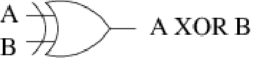
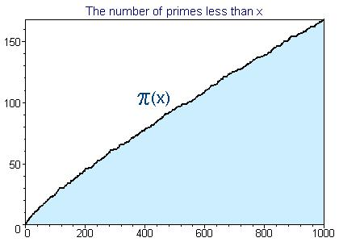

Introduction
The mathematical foundations for computer security range from simple ones like addition, through to more complicated investigations into elliptic curves and so on. In this presentations, we limit ourselves to some basic notions that cover a wide range of security systems.
Basic functions: xor and log
We begin with the exclusive-or boolean function, which comes up
constantly in computer security. The
ordinary or boolean function in mathematics means either
one or the other
or both.
However the exclusive-or boolean function means either one or the
other but not
both.
It is found as
xor
or \(\oplus\), or in electronic circuit diagrams as

, and is the same as addition mod 2. The table below shows the truth table for a single bit.| \(a\) | \(b\) | \(a\oplus b\) |
|---|---|---|
| \(0\) | \(0\) | \(0\) |
| \(0\) | \(1\) | \(1\) |
| \(1\) | \(0\) | \(1\) |
| \(1\) | \(1\) | \(0\) |
The xor function is commutative and associative. We often use
exclusive-or over bitstrings. If we wished to encode a message
“ABC” using the xor function, we would first encode the
message as a bit string using (say) the ASCII encoding, and derive the
bitstring 01000001.01000010.01000011. Each bit of this could then
be xor’ed with a bit from a corresponding (random) bit string
called the key:
| Message | A | B | C |
| \(m\) | 0 1 0 0 0 0 0 1 |
0 1 0 0 0 0 1 0 |
0 1 0 0 0 0 1 1 . . . |
| Key\(=k\) | 0 0 0 1 0 0 1 1 |
0 1 1 0 0 1 0 1 |
0 0 1 1 1 0 0 1 . . . |
| \(K(m)=m\oplus k\) | 0 1 0 1 0 0 1 0 |
0 0 1 0 0 1 1 1 |
0 1 1 1 1 0 1 0 . . . |
| \(K(m)\) | R | ’ | z |
The encoded message is “R’z”, and this message may be transmitted
over an insecure network. At the receiver end, the key is assumed to be
known, and a second xor operation restores the original message.
If the key bit-stream is (essentially) random, and not known to an
eavesdropper, then this is the most secure system known. It is called a
one-time pad, or Vernam’s cipher. Of course if the key is known to an
eavesdropper, then the eavesdropper can decode the message. The
technique relies on the property of xor that
\(m\oplus k\oplus k=m\).
Logarithms, particularly logs base 2, are also extensively used in
computer science, and also in computer security. A logarithm is an
inverse of an exponential: \(y=\log_{2}x\) is the same as \(2^{y}=x\). In
the same way that \(\log_{10}x\) gives the number of decimal digits needed
to represent \(x\), \(\log_{2}x\) gives the number of bits for \(x\).
Groups, rings and fields
Finite fields are important in the area of computer security. In the study of cryptography for example, we may be interested in taking a message \(m\) and converting it to another message \(K(m)\) by performing a series of operations on the bytes of the original message, as we just saw with the \(\oplus\) operation. Common arithmetic operations that we use such as addition and multiplication are not in general suitable for this activity, as we often want the operations to be constrained to some set of message values or types. For example, if our message elements were (8-bit) bytes, and we were using addition, then the message \(m=\mathrm{0xff}\), and the operation \(+1\) would result in an encrypted message \(K(m)=\mathrm{0x100}\), which cannot be stored in a byte. We can efficiently construct finite systems by, for example, instead of the operation \(+\), we might use addition modulo p, where p is a prime.
Here are formal definitions for groups, rings and fields, the mathematical structures used for most modern cryptography.
Definition 1. A group \(\{G,\bullet\}\) is a non-empty set \(G\) with a binary operator \(\bullet\), satisfying the following properties for all \(a,b,c\in G\):
-
Closure: \(G\) is closed under \(\bullet\). That is \(a\bullet b\in G\).
-
Associative: \(\bullet\) is associative on \(G\). That is \((a\bullet b)\bullet c=a\bullet(b\bullet c)\).
-
Identity: There is an identity element \(I\) such that \(a\bullet I=I\bullet a=a\).
-
Inverse: Each element has a unique inverse \(a^{-1}\) such that \(a^{-1}\bullet a=a\bullet a^{-1}=I\).
A group is finite if it has a finite number of elements, and it is called an abelian group if it is commutative. An example of an infinite group is the set of integers under addition, with identity \(0\). It is an infinite commutative group.
Definition 2. A ring \(\{R,+,\ast{}\}\) is the set \(R\) together with two binary operators \(+\) and \(\ast{}\) satisfying the following conditions for all \(a,b,c\in R\):
-
Closure for \(\ast{}\): \(R\) is closed under \(\ast{}\). That is \(a\ast{}b\in R\).
-
Abelian for \(+\): \(R\) is an abelian group under addition. The identity is \(0\).
-
Associative for \(\ast{}\): \(a\ast{}(b\ast{}c)=(a\ast{}b)\ast{}c\).
-
LR distributive: \(a\ast{}(b+c)=(a\ast{}b)+(a\ast{}c)\) and \((a+b)\ast{}c=(a\ast{}c)+(b\ast{}c)\).
Definition 3. A field (or rational domain) \(\{F,+,\ast{}\}\) is the set \(F\) together with two binary operators \(+\) and \(\ast{}\), which is a commutative ring, and also satisfies the following conditions for all \(a,b\in F\), \(c\in F\backslash0\):
-
Identity for \(\ast{}\): There is an identity \(1\in F\) such that \(1\ast{}a=a\ast{}1=a\).
-
No zero divisor: If \(a\ast{}b=0\) then either \(a=0\) or \(b=0\).
-
Inverse for \(\ast{}\): For each \(c\), there is a \(c^{-1}\in F\) such that \(c\ast{}c^{-1}=c^{-1}\ast{}c=1\).
A ring means we can do \(\ast{},+,-\) without leaving the set, but a field means we can do \(\ast{},/,+,-\) without leaving the set. Examples of infinite fields are the rational numbers Q, the reals \(\mathbb{R}\), or the complex numbers \(\mathbb{C}\), using \(+\) and \(\ast{}\).
Modular arithmetic
The
mod
operator returns the remainder (or residue) after integer division of
its first argument by its second. In the case where the second argument
is a power of two, the result can be calculated quickly using
bitwise
and
with an appropriate bit-mask. Two numbers \(a\) and \(b\) are
congruent
modulo \(n\)
if \(a\,\mathrm{mod}\,n=b\,\mathrm{mod}\,n\).
We write:
This modular arithmetic has various identities[^1]:
The positive integers mod n (\(Z_{n}\)) form a group under addition. The elements are \(0\), \(1\), \(2\), \(\ldots\), \(n-1\), and the identity is \(0\). The inverse of \(a\) is \(n-a\).
| \(+\) | 0 | 1 | 2 | 3 | 4 | 5 | 6 |
|---|---|---|---|---|---|---|---|
| 0 | \(0\) | \(1\) | \(2\) | \(3\) | \(4\) | \(5\) | \(6\) |
| 1 | \(1\) | \(2\) | \(3\) | \(4\) | \(5\) | \(6\) | \(0\) |
| 2 | \(2\) | \(3\) | \(4\) | \(5\) | \(6\) | \(0\) | \(1\) |
| 3 | \(3\) | \(4\) | \(5\) | \(6\) | \(0\) | \(1\) | \(2\) |
| 4 | \(4\) | \(5\) | \(6\) | \(0\) | \(1\) | \(2\) | \(3\) |
| 5 | \(5\) | \(6\) | \(0\) | \(1\) | \(2\) | \(3\) | \(4\) |
| 6 | \(6\) | \(0\) | \(1\) | \(2\) | \(3\) | \(4\) | \(5\) |
| \(\ast{}\) | 0 | 1 | 2 | 3 | 4 | 5 | 6 |
|---|---|---|---|---|---|---|---|
| 0 | \(0\) | \(0\) | \(0\) | \(0\) | \(0\) | \(0\) | \(0\) |
| 1 | \(0\) | \(1\) | \(2\) | \(3\) | \(4\) | \(5\) | \(6\) |
| 2 | \(0\) | \(2\) | \(4\) | \(6\) | \(1\) | \(3\) | \(5\) |
| 3 | \(0\) | \(3\) | \(6\) | \(2\) | \(5\) | \(1\) | \(4\) |
| 4 | \(0\) | \(4\) | \(1\) | \(5\) | \(2\) | \(6\) | \(3\) |
| 5 | \(0\) | \(5\) | \(3\) | \(1\) | \(6\) | \(4\) | \(2\) |
| 6 | \(0\) | \(6\) | \(5\) | \(4\) | \(3\) | \(2\) | \(1\) |
| \(a\) | \(-a\) | \(a^{-1}\) |
|---|---|---|
| 0 | \(0\) | - |
| 1 | \(6\) | \(1\) |
| 2 | \(5\) | \(4\) |
| 3 | \(4\) | \(5\) |
| 4 | \(3\) | \(2\) |
| 5 | \(2\) | \(3\) |
| 6 | \(1\) | \(6\) |
In cryptography, we are often interested in \(Z_{p}\) where \(p\) is a prime number. Observe what happens when we do modular arithmetic on \(Z_{7}\). The table above has the result of addition and multiplication modulo \(7\) on the set of integers \(Z_{7}\), along with the additive and multiplicative inverses. Note that every item has an additive inverse, and that every item except \(0\) has a multiplicative inverse, and so from our previous definitions, we know that \(Z_{7}\) forms a field with \(+,\ast{}\).
| \(+\) | 0 | 1 | 2 | 3 | 4 | 5 | 6 | 7 |
|---|---|---|---|---|---|---|---|---|
| 0 | \(0\) | \(1\) | \(2\) | \(3\) | \(4\) | \(5\) | \(6\) | \(7\) |
| 1 | \(1\) | \(2\) | \(3\) | \(4\) | \(5\) | \(6\) | \(7\) | \(0\) |
| 2 | \(2\) | \(3\) | \(4\) | \(5\) | \(6\) | \(7\) | \(0\) | \(1\) |
| 3 | \(3\) | \(4\) | \(5\) | \(6\) | \(7\) | \(0\) | \(1\) | \(2\) |
| 4 | \(4\) | \(5\) | \(6\) | \(7\) | \(0\) | \(1\) | \(2\) | \(3\) |
| 5 | \(5\) | \(6\) | \(7\) | \(0\) | \(1\) | \(2\) | \(3\) | \(4\) |
| 6 | \(6\) | \(7\) | \(0\) | \(1\) | \(2\) | \(3\) | \(4\) | \(5\) |
| 7 | \(7\) | \(0\) | \(1\) | \(2\) | \(3\) | \(4\) | \(5\) | \(6\) |
| \(\ast{}\) | 0 | 1 | 2 | 3 | 4 | 5 | 6 | 7 |
|---|---|---|---|---|---|---|---|---|
| 0 | \(0\) | \(0\) | \(0\) | \(0\) | \(0\) | \(0\) | \(0\) | \(0\) |
| 1 | \(0\) | \(1\) | \(2\) | \(3\) | \(4\) | \(5\) | \(6\) | \(7\) |
| 2 | \(0\) | \(2\) | \(4\) | \(6\) | \(0\) | \(2\) | \(4\) | \(6\) |
| 3 | \(0\) | \(3\) | \(6\) | \(1\) | \(4\) | \(7\) | \(2\) | \(5\) |
| 4 | \(0\) | \(4\) | \(0\) | \(4\) | \(0\) | \(4\) | \(0\) | \(4\) |
| 5 | \(0\) | \(5\) | \(2\) | \(7\) | \(4\) | \(1\) | \(6\) | \(3\) |
| 6 | \(0\) | \(6\) | \(4\) | \(2\) | \(0\) | \(6\) | \(4\) | \(2\) |
| 7 | \(0\) | \(7\) | \(6\) | \(5\) | \(4\) | \(3\) | \(2\) | \(1\) |
| \(a\) | \(-a\) | \(a^{-1}\) |
|---|---|---|
| 0 | \(0\) | - |
| 1 | \(7\) | \(1\) |
| 2 | \(6\) | - |
| 3 | \(5\) | \(3\) |
| 4 | \(4\) | - |
| 5 | \(3\) | \(5\) |
| 6 | \(2\) | - |
| 7 | \(1\) | \(7\) |
Consider the set \(Z_{8}\). Note that not every element in \(Z_{8}\) has a multiplicative inverse (so this is not a field).
Finite fields
Previously we had infinite fields of different types. It is of interest to note that finite fields of a particular size \(n\) are unique modulo renaming of the set elements. This means that if you had a field of size \(7\), all other fields of size \(7\) can be directly converted to the original field by just renaming the elements.
Another property of all finite fields is that their size must be \(p^{n}\), where \(p\) is a prime, and \(n\) is a positive integer. We use the notation \(\mathrm{GF}(p^{n})\) to refer to such finite fields in honour of the French mathematician Évariste Galois[^2]. In cryptography we are generally interested in either \(\mathrm{GF}(p)\) or \(\mathrm{GF}(2^{n})\). For example, \(\mathrm{GF}(2^{8})\) is the basis for one of the processes inside AES, the Advanced Encryption Standard.
Previously \(\mathrm{GF}(7)\) was a field, however \(\mathrm{GF}(8)\) does not look like a field, and yet \(2^{3}=8\). What is going on?
Fields of the form \(\mathrm{GF}(2^{n})\) use
polynomial arithmetic where addition is like bitwise
xor,
and multiplication is done using polynomial arithmetic modulo \(2\). If
the multiplication results in too large a polynomial, then we reduce it
modulo an “irreducible polynomial of
degree \(n\)”. All of this requires
some explanation.
Polynomial arithmetic
Polynomials are expressions like
\(3x^{5}+x^{2}+x+1\). More generally, a (univariate) polynomial of degree
\(n\) is \(\sum^{n}_{i=0}a_{i}x^{i}\). A particular set of such polynomials
is the set where the coefficients \(a_{i}\) belong to \(Z_{p}\). In the case
where \(p=2\), then the coefficients are either \(0\) or \(1\). In this
restricted case, polynomial addition becomes the same as the
xor
function over the coefficients. Consider the addition of \(3\) and
\(6\):
| \(3=011\) | \(x\) | \(+\) | \(1\) | ||||
| \(\oplus\) | \(6=110\) | \(+\) | \(x^{2}\) | \(+\) | \(x\) | ||
| \(5=101\) | \(x^{2}\) | \(+\) | \(1\) |
Multiplication follows a similar pattern, but when the multiplication results in too large a polynomial, then we reduce it, by dividing it by an irreducible polynomial of degree \(n\), and take the residue. In the case of \(n=3\), a polynomial like \(x^{3}+x+1=1011\) is irreducible. An example, \(7\times7\):
| \(7=\) | \(111\) | \(x^{2}\) | \(+\) | \(x\) | \(+\) | \(1\) | ||||||
| \(\ast{}\) | \(7=\) | \(111\) | \(\ast{}\) | \(x^{2}\) | \(+\) | \(x\) | \(+\) | \(1\) | ||||
| \(111\) | \(x^{2}\) | \(+\) | \(x\) | \(+\) | \(1\) | |||||||
| \(\oplus\) | \(1110\) | \(x^{3}\) | \(+\) | \(x^{2}\) | \(+\) | \(x\) | ||||||
| \(\oplus\) | \(11100\) | \(x^{4}\) | \(+\) | \(x^{3}\) | \(+\) | \(x^{2}\) | ||||||
| \(10101\) | \(x^{4}\) | \(+\) | \(x^{2}\) | \(+\) | \(1\) |
The result polynomial is too large, so we reduce it, using polynomial long division, with the result being the remainder:
| \(10\) | \(x\) | |||||||||||
|---|---|---|---|---|---|---|---|---|---|---|---|---|
| 2-2 | \(10101\) | \(x^{3}+x+1\) | \(x^{4}\) | \(+\) | \(x^{2}\) | \(+\) | \(1\) | |||||
| \(1011\) | \(x^{4}\) | \(+\) | \(x^{2}\) | \(+\) | \(x\) | |||||||
| 6-11 | \(11\) | \(x\) | \(+\) | \(1\) |
Finally, we have that in \(\mathrm{GF}(2^{3})\), \(7\ast{}7=3\). We now present the tables for arithmetic in \(\mathrm{GF}(2^{3})\):
| \(+\) | 0 | 1 | 2 | 3 | 4 | 5 | 6 | 7 |
|---|---|---|---|---|---|---|---|---|
| 0 | \(0\) | \(1\) | \(2\) | \(3\) | \(4\) | \(5\) | \(6\) | \(7\) |
| 1 | \(1\) | \(0\) | \(3\) | \(2\) | \(5\) | \(4\) | \(7\) | \(6\) |
| 2 | \(2\) | \(3\) | \(0\) | \(1\) | \(6\) | \(7\) | \(4\) | \(5\) |
| 3 | \(3\) | \(2\) | \(1\) | \(0\) | \(7\) | \(6\) | \(5\) | \(4\) |
| 4 | \(4\) | \(5\) | \(6\) | \(7\) | \(0\) | \(1\) | \(2\) | \(3\) |
| 5 | \(5\) | \(4\) | \(7\) | \(6\) | \(1\) | \(0\) | \(3\) | \(2\) |
| 6 | \(6\) | \(7\) | \(4\) | \(5\) | \(2\) | \(3\) | \(0\) | \(1\) |
| 7 | \(7\) | \(6\) | \(5\) | \(4\) | \(3\) | \(2\) | \(1\) | \(0\) |
| \(\ast{}\) | 0 | 1 | 2 | 3 | 4 | 5 | 6 | 7 |
|---|---|---|---|---|---|---|---|---|
| 0 | \(0\) | \(0\) | \(0\) | \(0\) | \(0\) | \(0\) | \(0\) | \(0\) |
| 1 | \(0\) | \(1\) | \(2\) | \(3\) | \(4\) | \(5\) | \(6\) | \(7\) |
| 2 | \(0\) | \(2\) | \(4\) | \(6\) | \(3\) | \(1\) | \(7\) | \(5\) |
| 3 | \(0\) | \(3\) | \(6\) | \(5\) | \(7\) | \(4\) | \(1\) | \(2\) |
| 4 | \(0\) | \(4\) | \(3\) | \(7\) | \(6\) | \(2\) | \(5\) | \(1\) |
| 5 | \(0\) | \(5\) | \(1\) | \(4\) | \(2\) | \(7\) | \(3\) | \(6\) |
| 6 | \(0\) | \(6\) | \(7\) | \(1\) | \(5\) | \(3\) | \(2\) | \(4\) |
| 7 | \(0\) | \(7\) | \(5\) | \(2\) | \(1\) | \(6\) | \(4\) | \(3\) |
| \(a\) | \(-a\) | \(a^{-1}\) |
|---|---|---|
| 0 | \(0\) | - |
| 1 | \(1\) | \(1\) |
| 2 | \(2\) | \(5\) |
| 3 | \(3\) | \(6\) |
| 4 | \(4\) | \(7\) |
| 5 | \(5\) | \(2\) |
| 6 | \(6\) | \(3\) |
| 7 | \(7\) | \(4\) |
Note that each non-zero element has a multiplicative inverse, and so we have a finite field of the form \(\mathrm{GF}(2^{n})\).
Primes... primes... primes...
In the previous section on finite fields, we were told that a property of all finite fields is that their size must be an integer power of a prime number. Prime numbers are fascinating, and even though they have few practical applications, they have been a preoccupation of mathematicians and philosophers for thousands of years.
Can you think of any real-world example of primes in action? One would expect that after 2500 years of study we would be using primes everywhere. Apart from the use of primes in cryptography and certain mathematical proofs, there are very few real-world examples of primes:
-
Sometimes... a prime number of ball bearings arranged in a bearing, to cut down on periodic wear (also gear teeth).
-
Possibly... the 13 and 17-year periodic emergence of cicadas may be due to coevolution with predators (that lost and became extinct).
-
Is it just a coincidence that the numbers on the main Real Madrid player’s jerseys are Carlos, No 3; Zidane, No 5; ...
Perhaps the enduring reason is because primes are beautiful.
More recently, the world’s interest in primes has been reactivated because 2500 years of mathematics has failed to uncover some basic prime properties, and hence they make a good candidate for constructing difficult (impossible to decrypt) translations. We do know some properties of primes, but not others.

For example we do not know how to predict the next one in an arbitrary sequence, but we do know that the density is predictable. In the above figure, note that \(\pi(x)\) (the number of primes less than \(x\)) is locally random, but asymptotic to \(\frac{x}{\log x}\).
As another example of an interesting prime property, consider this problem: Is it possible to find an arbitrary sized sequence of numbers that are not primes? The somewhat surprising answer to this is YES. If you want 42,000 not-primes in a row, calculate \(42001\ast{}\ldots\ast{}2\ast{}1=42001!\), and choose the numbers \(42001!+2\), \(42001!+3\).
We now introduce “prime” theorems with particular applications in cryptography.
Fermat’s little theorem
Pierre de Fermat was a French amateur mathematician who contributed to calculus, number theory, analytic geometry and probability.
Theorem 1. If \(p\) is prime, and \(a\) is a positive integer which is not divisible by \(p\) (i.e. \(\mathrm{gcd}(a,p)=1\)), then \(a^{p-1}\equiv1\,\,\,(\mathrm{mod}\,p)\).*
a |
\(a^{1}\) | \(a^{2}\) | \(a^{3}\) | \(a^{4}\) | \(a^{5}\) | \(a^{6}\) | \(a^{7}\) | \(a^{8}\) | \(a^{9}\) | \(a^{10}\) |
|---|---|---|---|---|---|---|---|---|---|---|
2 |
\(2\) | \(4\) | \(8\) | \(5\) | \(10\) | \(9\) | \(7\) | \(3\) | \(6\) | \(1\) |
3 |
\(3\) | \(9\) | \(5\) | \(4\) | \(1\) | \(3\) | \(9\) | \(5\) | \(4\) | \(1\) |
4 |
\(4\) | \(5\) | \(9\) | \(3\) | \(1\) | \(4\) | \(5\) | \(9\) | \(3\) | \(1\) |
5 |
\(5\) | \(3\) | \(4\) | \(9\) | \(1\) | \(5\) | \(3\) | \(4\) | \(9\) | \(1\) |
6 |
\(6\) | \(3\) | \(7\) | \(9\) | \(10\) | \(5\) | \(8\) | \(4\) | \(2\) | \(1\) |
7 |
\(7\) | \(5\) | \(2\) | \(3\) | \(10\) | \(4\) | \(6\) | \(9\) | \(8\) | \(1\) |
8 |
\(8\) | \(9\) | \(6\) | \(4\) | \(10\) | \(3\) | \(2\) | \(5\) | \(7\) | \(1\) |
9 |
\(9\) | \(4\) | \(3\) | \(5\) | \(1\) | \(9\) | \(4\) | \(3\) | \(5\) | \(1\) |
10 |
\(10\) | \(1\) | \(10\) | \(1\) | \(10\) | \(1\) | \(10\) | \(1\) | \(10\) | \(1\) |
The above table shows Fermat’s theorem in operation. Notice that \(a^{10}\) is always \(1\), but that sometimes \(a^{n}=1\) for \(n<10\). When \(1\) occurs earlier, the \(n\)th powers are always numbers that evenly divide \(p-1\).
In modern cryptography we are often doing calculations with large numbers, perhaps ones with 1000s of digits. Consider the following problem:
result=
62247027506732273704655645590797926890623986483292191309020787710924
86991072740587065198907810173838994978267934813009677708927826601313
55777365361484044783800851222817392261341421370762400507026834564501
61478881858016233581815507729190060733863810985820998417753776670372
86814739670120315712396914000184822340352355906455155667534102473964
53541377412583676260706359331048403293779053704648771069764131865422
62299505280557584280574185802694213299802280179325494560628948940739
34448228464915119714116869895958794732025285742690180232449402567101
05083114967356334295809219455711191131246974627173111242792554453321
16504914530077241996189357298508605206780120789880835525222341940514
58556732086842042388893209157040799864871901064991230860288657545878
54838031902109935110264503891544145872580747830622294066978047059698
08888224976779404912792017633095411318555938776800816778624695807909
49705787192596277127796303487781814106147375370904627195995589087276
8469943 mod 13 = 5
A quick way to work out problems like the
above one is to use
bc,
an arbitrary precision calculator. It has a language that supports
arbitrary precision numbers.
However, our new knowledge of Fermat’s little theorem give us much more effective ways of calculating some large problems. For example, an interesting observation that can be made here is that because \(a\) to a power mod \(p\) always starts repeating after the power reaches \(p-1\):
An example of the use of this:
We have reduced a problem that requires computer assistance to one that can be performed mentally.
Euler’s theorem
Leonhard Euler (April 15, 1707 - September 18, 1783) was a Swiss mathematician and physicist, and was one of the first researchers to apply calculus to physics. Born and educated in Switzerland, he was deeply religious throughout his life, and worked as a professor of mathematics in Saint Petersburg and Berlin. He was a prolific researcher despite being completely blind for the last seventeen years of his life, during which time he produced much of his work.
Theorem 2. For every \(a\) and \(n\) that are relatively prime:
where \(\phi(n)\) is the totient function and \(p_{1}\), \(\ldots\) , \(p_{m}\) are all the prime numbers that divide evenly into \(n\), including \(n\) itself in case it is a prime.
Euler’s totient function \(\phi(n)\) returns the number of positive integers less than \(n\) and relatively prime to \(n\). Fermat’s theorem is a specific case of the more general Euler’s theorem. We can see this by considering the (Fermat) case where \(n\) is a prime, and then \(a^{\phi(n)}\,\mathrm{mod}\,n=a^{n-1}\,\mathrm{mod}\,n=1\). When \(n\) is a product of two primes: \(n=pq\), then
and so if \(a\) and \(pq\) are relatively prime, then
The table below shows Euler’s theorem in operation[^3]:
| \(a^{1}\) | \(a^{2}\) | \(a^{3}\) | \(a^{4}\) | \(a^{5}\) | \(a^{6}\) | \(a^{7}\) | \(a^{8}\) | \(a^{9}\) | \(a^{10}\) | \(a^{11}\) | \(a^{12}\) | \(a^{13}\) | \(a^{14}\) |
|---|---|---|---|---|---|---|---|---|---|---|---|---|---|
| 2 | 4 | 8 | 1 | 2 | 4 | 8 | 1 | 2 | 4 | 8 | 1 | 2 | 4 |
| 3 | 9 | 12 | 6 | 3 | 9 | 12 | 6 | 3 | 9 | 12 | 6 | 3 | 9 |
| 4 | 1 | 4 | 1 | 4 | 1 | 4 | 1 | 4 | 1 | 4 | 1 | 4 | 1 |
| 5 | 10 | 5 | 10 | 5 | 10 | 5 | 10 | 5 | 10 | 5 | 10 | 5 | 10 |
| 6 | 6 | 6 | 6 | 6 | 6 | 6 | 6 | 6 | 6 | 6 | 6 | 6 | 6 |
| 7 | 4 | 13 | 1 | 7 | 4 | 13 | 1 | 7 | 4 | 13 | 1 | 7 | 4 |
| 8 | 4 | 2 | 1 | 8 | 4 | 2 | 1 | 8 | 4 | 2 | 1 | 8 | 4 |
| 9 | 6 | 9 | 6 | 9 | 6 | 9 | 6 | 9 | 6 | 9 | 6 | 9 | 6 |
| 10 | 10 | 10 | 10 | 10 | 10 | 10 | 10 | 10 | 10 | 10 | 10 | 10 | 10 |
| 11 | 1 | 11 | 1 | 11 | 1 | 11 | 1 | 11 | 1 | 11 | 1 | 11 | 1 |
| 12 | 9 | 3 | 6 | 12 | 9 | 3 | 6 | 12 | 9 | 3 | 6 | 12 | 9 |
| 13 | 4 | 7 | 1 | 13 | 4 | 7 | 1 | 13 | 4 | 7 | 1 | 13 | 4 |
| 14 | 1 | 14 | 1 | 14 | 1 | 14 | 1 | 14 | 1 | 14 | 1 | 14 | 1 |
Note that \(1\) is reached when the power is \(8\), for numbers with no divisors in common with \(15\), such as \(2,4,7,8,11,13\) and \(14\). For \(3,5,6,9,10\) and \(12\), it is never \(1\).
[^1]: Note that sometimes we write \(a\,\mathrm{mod}\,n=b\,\mathrm{mod}\,n\) and sometimes \(a\equiv b\,\,\,\,(\mathrm{mod}\,n)\). Both notations are acceptable.
[^2]: Galois developed the original ideas of group theory. He also regularly failed his exams! His physics teacher described him in this way: “He knows absolutely nothing. I have been told that this student has mathematical ability; this certainly astonishes me. Judging by his examination, he seems of little intelligence, or has hidden his intelligence so well that I found it impossible to detect it. He was imprisoned in 1831 over a dinnertime toast, and just before his death (possibly in a gunfight over a paramour), he wrote a letter describing the connection between group theory and the solutions of polynomial equations. He was only 20 when he died. So sad.
[^3]: Arithmetic in the exponent is taken mod \(\phi(n)\), so that \(a^{x}\,\mbox{{mod}}\,n=a^{x\,\mbox{{mod}}\,\phi(n)}\,\mbox{{mod}}\,n\), if \(a\) and \(n\) are relatively prime. In the case where \(n=pq\), \(a^{k\phi(n)+1}\,\mbox{{mod}}\,n=a\) for all \(a\).